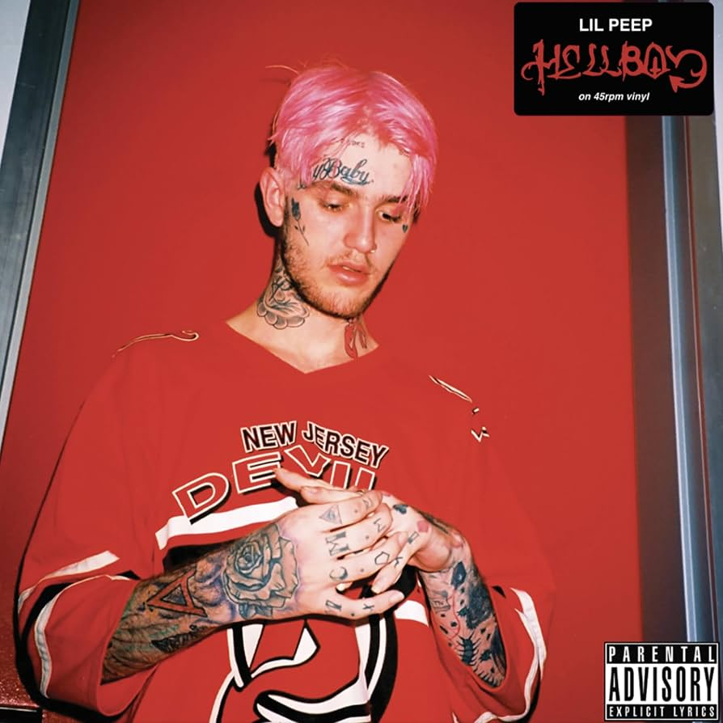

Lil Peep
1996 - 2017 · Rap, emo, rock

Qui est Lil Peep ?
Lil Peep (de son vrai nom Gustav Elijah Åhr) est un rappeur américain, né le 1er novembre 1996 à Allentown en Pennsylvanie, et mort d'une overdose le 15 novembre 2017 à Tucson en Arizona, à 21 ans.
Son héritage
Lil Peep est considéré comme l'un des pionniers de l'emo rap, un style qui mélange le rap avec les guitares et les émotions du rock et de l'emo. Il a ouvert la voie à toute une génération d'artistes qui n'ont pas peur de parler de leurs sentiments.
Après sa mort, ses proches ont continué à partager sa musique. En 2018 sort Come Over When You're Sober, Pt. 2, ainsi que le single Falling Down avec XXXTentacion. En 2019, le documentaire Everybody's Everything revient sur sa vie.
Aujourd'hui encore, des millions de personnes écoutent ses morceaux, et de nouveaux fans le découvrent chaque année.